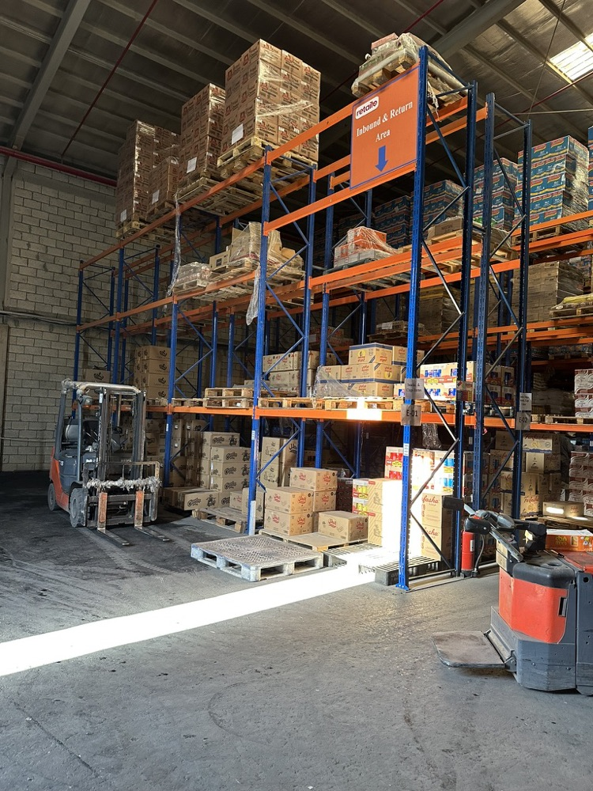
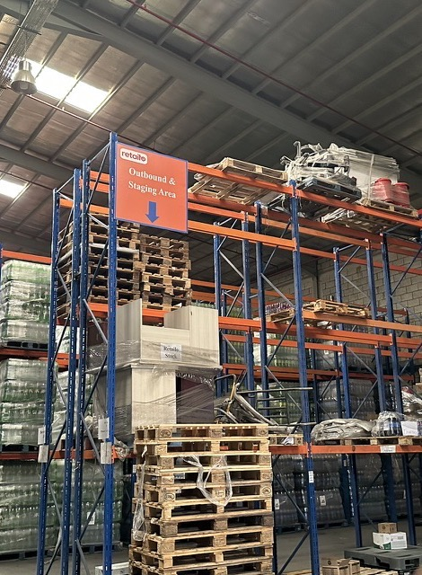
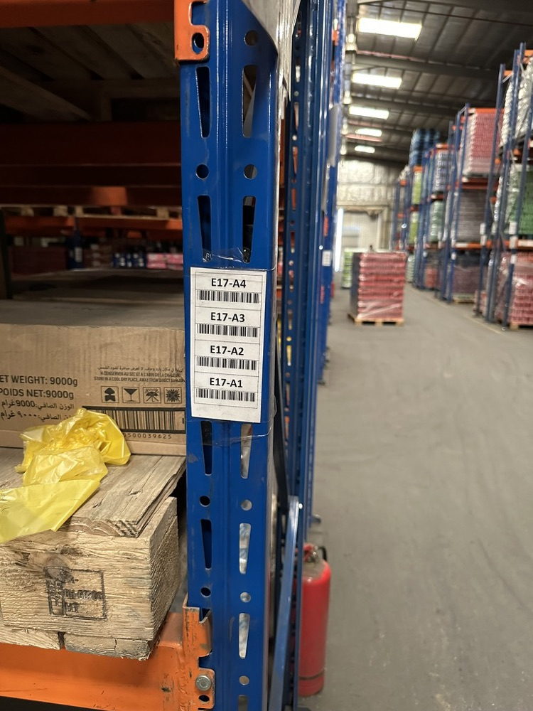
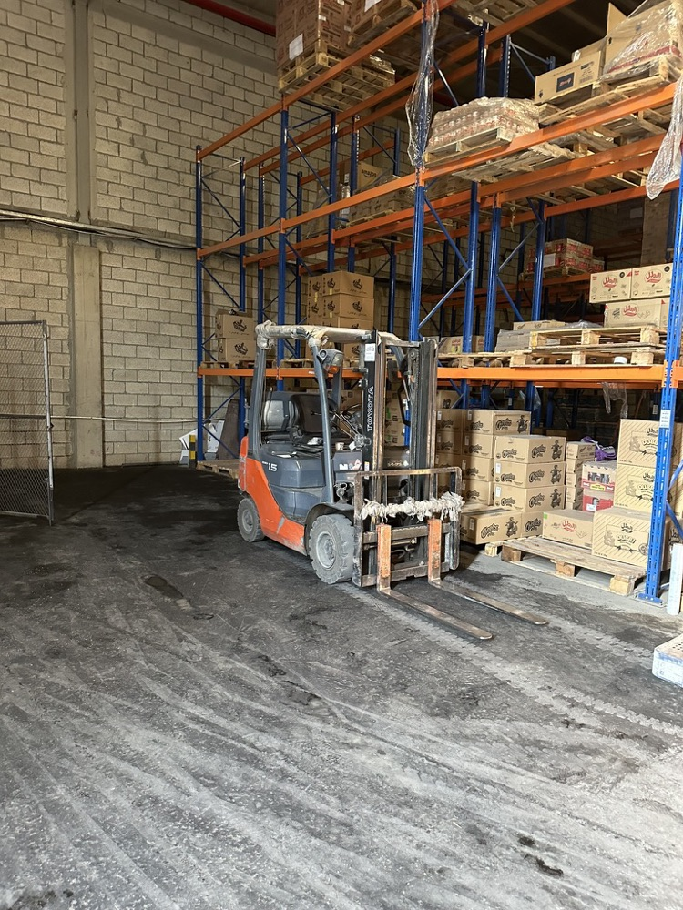

Stockflo: replacing Odoo with our own warehouse management system
Building an in-house warehouse management system around how our teams actually worked.
Retailo · Associate Product Manager · 2022 · Saudi Arabia, Pakistan and the UAE
Target audience
Commercial buyers, who provide vendors, ask for quotations and raise purchase orders, and their leads, who approve those purchase orders.
Warehouse associates and leads, who receive goods, handle returns and move stock.
Finance, who approve suppliers and need a clear view of what came in and at what cost.
The MIS (management information systems) team, the warehouse team's tech arm, who make sure stock on the ground matches stock in the system, set up warehouse locations and make stock adjustments.
Discovery
I spent time in the warehouses watching how goods were bought, received, moved and adjusted, and mapped every step from vendor to stock on the shelf.
I spoke with each team that touched stock: Commercial buyers and their leads, warehouse associates and leads, Finance and the MIS team, to see where Odoo and our admin panel let them down.
I traced the wrong stock counts behind failed morning orders back to their causes: transactions in Odoo that never reached the admin panel, receiving with no formal procedure, and adjustments anyone could make without a trace.
What discovery decided: rather than keep patching the Odoo integration, build our own system around how the teams actually worked.
Customer pain points
Why we needed Odoo in the first place
Our admin panel could not create or approve requests for quotation, had no user permissions, and kept no record of when purchase orders were created or approved.
Receiving goods had no formal procedure, returns to suppliers went unrecorded, and anyone could move or adjust stock without a trace.
That made reconciliation hard and left Finance without a clear view of what came in and at what cost.
Why we built Stockflo despite having Odoo
Odoo could not keep up with how fast Retailo was growing, and its worker-based pricing made it expensive at our scale.
Integrating it with our own systems kept breaking: transactions done in Odoo did not show up in other integrated systems such as our admin panel.
Wrong stock counts hit the morning orders: items customers had ordered were not there, which left both customers and drivers unhappy.
We lacked access controls for specific steps, such as who could approve a purchase order before its goods were received, and that had to change.
Clear objectives
Know exactly how much stock we have at any time, so orders can be planned around it.
Retire Odoo without losing any operation the warehouses depended on.
Give every team the right permissions, so the wrong people cannot carry out the wrong tasks, and keep a record of every change.
Give Finance a reliable view of what was received and at what cost.
My role
I mapped how purchasing, receiving and stock movements actually worked in the warehouses, then wrote the product requirements: user stories and acceptance criteria for vendors, purchasing, receiving and inventory.
I worked with designers to go from Excel wireframes to full Figma screens, and with engineering to build it.
I led the rollout across Saudi Arabia, Pakistan and the UAE, training warehouse staff through presentations and video walkthroughs.
Two very different warehouses
Stockflo had to work for two quite different ways of running a warehouse.
Saudi Arabia: machinery-ledForklifts and pallet racking did most of the work. Stock was concentrated in a smaller number of products, each held in large quantities.
Pakistan: labour-ledMany lower-value products, handled mostly by hand, because labour there costs less than machinery.
The same system had to support both, from a few big pallets to many small, hand-picked items.
In the warehouse

Inbound and return area, where goods are received against purchase orders and returns are logged.

Outbound and staging area, where picked orders wait for delivery.

Every rack position has its own labelled location code.

Pallet racking in one of our warehouses.
Prioritisation framework
We prioritised by impact on the biggest problem: inventory accuracy. Wrong stock counts broke the morning orders and upset customers and drivers, so knowing our real stock at any moment came first.
Inside the build, the same rule applied: anything not needed to retire Odoo and keep stock accurate waited.
The MVP
The test for the first version was simple: could the warehouses switch Odoo off and keep running? That meant five things had to work from day one.
UsersRoles and permissions, so each person can only do their own job.
VendorsAdded by Commercial, approved by Finance before they can be used.
BuyingQuotations and purchase orders, locked once approved.
ReceivingGoods received against the order, with backorders and returns.
StockAdjustments with a reason, and one view of every stock movement.
What I left out, on purpose
Anything not needed to retire Odoo waited for a later version:
Product photos on receiptsUnits of measure and bundlesLot trackingDetailed payment termsSending orders over WhatsApp
For payment terms, a simple credit or advance option covered the first version.
How stock comes in
VendorCreated, then approved by Finance
→
QuotationCommercial buyer
→
Purchase orderLocked by a lead
→
Goods receivedWarehouse associate
If a supplier delivers only part of an order, the system creates a backorder for the rest, and goods can be returned to the supplier straight from the receipt.
Key decisions
Permissions by role
Each action, such as creating a vendor, locking a purchase order or approving a receipt, is a permission. Permissions are grouped into roles like Commercial Buyer, Warehouse Lead and Finance Associate, so access matches the job.
Lock to approve, unlock to edit
Vendors and purchase orders only become usable once a lead locks them. To change one, the lead unlocks it, and the edit needs approval again.
Vendor details that fit each country
The tax ID field switches between VAT for Saudi Arabia and the UAE and NTN for Pakistan, with the right format checks and registration rules for each country.
Receiving that handles real deliveries
Partial deliveries create a backorder automatically, the warehouse cannot receive more than was ordered, and returns are subtracted from what was received.
Every stock adjustment needs a reason
Each adjustment must state why it happened, such as a stock count, damages or expired stock. The screen shows the system quantity next to the counted one, and large changes can be uploaded in bulk from a spreadsheet.
A history of changes
Vendor creation and edits are logged and visible on screen, and purchase orders and receipts keep their timestamps. Because we could see who changed what, we could correct specific behaviours by working directly with the people involved, which gave us much better governance over stock.
Risks
Switching Odoo off while warehouses kept running: the MVP covered every operation needed to retire it before anything new was added.
Getting staff in three countries to change how they worked: I ran presentations and sent out video walkthroughs during the rollout.
Stock changing without anyone knowing why: role permissions, a reason on every adjustment and a full change history.
Different tax rules in each country: supplier fields that change format by country.
Product analytics
Trust in the new system came first. For the first month or so, warehouse staff checked after every update that the stock Stockflo sent matched the stock on the admin panel.
Our logs showed exactly when every inventory change was made, and we reconciled those against the changes orders made on the admin panel, tracked on a dashboard.
Feedback loops
Warehouse staff were our main customer, so we kept a very open line with them: weekly check-ins, a support channel for reporting issues, and phone calls whenever something went wrong.
We visited the warehouses in person and, because we had a good working relationship, could drop in any time to see problems first-hand and get them fixed.
Outcome
Stockflo replaced Odoo across Saudi Arabia, Pakistan and the UAE. Purchasing gained formal approvals and records, receiving and stock adjustments became traceable, inventory accuracy improved, and the platform became the base for later features such as inventory payments.